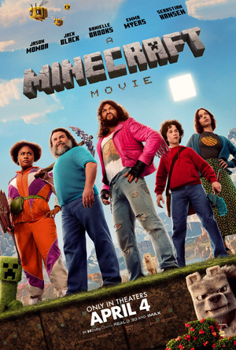

Quatro desajustados - Garrett “The Garbage Man” Garrison (Momoa), Henry (Hansen), Natalie (Emma Myers) e Dawn (Danielle Brooks) – envolvidos com seus problemas do dia a dia, de repente são transportados, por um misterioso portal, para Overworld: um bizarro país das maravilhas cúbico onde impera a imaginação. Para voltar para casa, eles vão ter que dominar este mundo (e protegê-lo de criaturas malignas como Piglins e Zumbis) enquanto embarcam em uma missão mágica com um experiente construtor imprevisível, Steve (Black). Juntos nessa aventura, os cinco serão desafiados a ousar e se reconectar com suas qualidades únicas que tornam cada um deles extraordinariamente criativos... as mesmas habilidades das quais eles precisam para prosperar no mundo real.